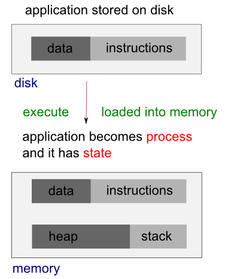

Linux Processes and Signals

The signals and processes control almost every task of the system.
We get the following response at ps -ef:
UID PID PPID C STIME TTY TIME CMD root 1 0 0 2010 ? 00:01:48 init root 21033 1 0 Apr04 ? 00:00:39 crond root 24765 1 0 Apr08 ? 00:00:01 /usr/sbin/httpd

Each process is allocated a unique number, process identifier (PID). It's an integer between 2 and 32,768. When a process is started, the numbers restart from 2, and the number 1 is typically reserved for the init process as shown in the above example. The process #1 manages other processes.
When we run a program, the code that will be executed is stored in a disk file. In general, a linux process can't write to the memory area. The area is for holding the program code so that the code can be loaded into memory as read-only (so, it can be safely shared).

The system libraries can also be shared. Therefore, there need be only one copy of printf() in memory, even if there are many programs calling it.
When we run two programs, there are variables unique to each programs, unlike the shared libraries, these are in separate data space of each process, and usually can't be shared. In other words, a process has its own stack space, used for local variables. It also has its own environment variables which are maintained by each process. A process should also has its own program counter, a record of where it has gotten to in its execution (execution thread - more on linux pthread).
The process table describes all the processes that are currently loaded. The ps command shows the processes. By default, it shows only processes that maintain a connection with a terminal, a console, a serial line, or a pseudo terminal. Other processes that can run without communication with a user on a terminal are system processes that Linux manages shared resources. To see all processes, we use -e option and -f to get full information (ps -ef).
Here is the STAT output from ps:
$ ps -ax
PID TTY STAT TIME COMMAND
1 ? Ss 1:48 init [3]
2 ? S< 0:03 [migration/0]
3 ? SN 0:00 [ksoftirqd/0]
....
2981 ? S<sl 10:14 auditd
2983 ? S<sl 3:43 /sbin/audispd
....
3428 ? SLs 0:00 ntpd -u ntp:ntp -p /var/run/ntpd.pid -g
3464 ? Ss 0:00 rpc.rquotad
3508 ? S< 0:00 [nfsd4]
....
3812 tty1 Ss+ 0:00 /sbin/mingetty tty1
3813 tty2 Ss+ 0:00 /sbin/mingetty tty2
3814 tty3 Ss+ 0:00 /sbin/mingetty tty3
3815 tty4 Ss+ 0:00 /sbin/mingetty tty4
.....
19874 pts/1 R+ 0:00 ps -ax
19875 pts/1 S+ 0:00 more
21033 ? Ss 0:39 crond
24765 ? Ss 0:01 /usr/sbin/httpd
The meaning of the code is in the table below:
| STAT Code | Description |
|---|---|
| R | Running or runnable (either executing or about to run). |
| D | Uninterruptible sleep (waiting) - usually waiting for input or output to complete. |
| S | Sleeping. Usually waiting for an event to occur, such as a signal or input to become available. |
| T | Stopped. Usually stopped by shell job control or the process is under the control of a debugger. |
| Z | Defunct or zombie process. |
| N | Low priority task, nice. |
| W | Paging. |
| s | The process is a session leader. |
| + | The process is in the foreground process group. |
| l | The process is multithreaded. |
| < | High priority task. |
Let's look at the following process:
1 ? Ss 1:48 init [3]
Each child process is started by parent process. When linux starts, it runs a single program, init, with process #1. This is OS process manager, and it's the prime ancestor of all processes. Then, other system processes are started by init or by other processes started by init. The login procedure is one of the example. The init starts the getty program once for each terminal that we can use to log in, and it is shown in the ps as below:
3812 tty1 Ss+ 0:00 /sbin/mingetty tty1
The getty processes wait for activity at the terminal, prompt the user with the login prompt, and then pass control to the login program, which sets up the user environment, and starts a shell. When the user shell exits, init starts another getty process.
The ability to start new processes and to wait for them to finish is fundamental to the system. We can do the same thing within our own programs with the system calls fork(), exec(), and wait().
A system call is a controlled entry point into the kernel, allowing a process to request that the kernel perform some action for the process.
Actually, a system call changes the processor state from user mode to kernel mode, so that the CPU can access protected kernel memory. The kernel makes a range of services accessible to programs via the system call application programming interface (API).
Let's look at the ps STAT output for ps ax itself:
23603 pts/1 R+ 0:00 ps ax
The STAT R indicates the process 23603 is in a run state. In other words, it tells its own state. The indicator shows that the program is ready to run, and is not necessarily running. The R+ indicates that the process is in foreground not waiting for other processes to finish nor waiting for input or output to complete. That's why we may see two such processes listed in ps output.
Linux kernel uses a process scheduler to decide which process will get the next time slice based on the process priority.
Usually, several programs are competing for the same resources. A program that performs short burst of work and pause for input is considered better behaved than the one that hog the processor by continually calculating/querying the system. Well-behaved programs are termed nice programs, and in a sense this niceness can be measured.
Tho OS determines the priority of a process based on a nice value and on the behavior of the program. Program that run for long periods without pausing generally get lower priorities. Programs that pause get rewarded. This helps keep a program that interacts with the user responsive; while it is waiting for some input from the user, the system increases its priority, so that when it's ready to resume, it has a high priority.
A niceness of -20 is the highest priority and 19 or 20 is the lowest priority. The default niceness for processes is inherited from its parent process, usually 0. But we can set the nice value using nice and adjust it using renice. The nice command increases the nice value of a process by 10, giving it a lower priority. Only the superuser (root) may set the niceness to a smaller (higher priority) value. On Linux it is possible to change /etc/security/limits.conf to allow other users or groups to set low nice values.
We can view the nice values of active processes using -l or -f option as in ps -l .
F S UID PID PPID C PRI NI ADDR SZ WCHAN TTY TIME CMD 0 S 601 12649 12648 0 75 0 - 1135 wait pts/0 00:00:00 bash 0 S 601 12681 12649 0 76 0 - 1122 wait pts/0 00:00:00 myTest.sh 0 S 601 12682 12681 0 76 0 - 929 - pts/0 00:00:00 sleep 0 R 601 12683 12649 0 76 0 - 1054 - pts/0 00:00:00 ps
Here we can see that the myTest.sh program is running with a default nice value 0. If it had been started with the following command:
$ nice ./myTest.sh &it would have been allocated a nice value of +10.
F S UID PID PPID C PRI NI ADDR SZ WCHAN TTY TIME CMD 0 S 601 9835 9834 0 75 0 - 1135 wait pts/1 00:00:00 bash 0 S 601 12744 12649 0 86 10 - 1122 wait pts/0 00:00:00 myTest.sh 0 S 601 12745 12744 0 86 10 - 929 - pts/0 00:00:00 sleep 0 R 601 12746 12649 0 76 0 - 1054 - pts/0 00:00:00 ps
We have another way of doing it:
$ renice 10 12681 12681: old priority 0, new priority 10
With higher nice value, the program will run less often. As we see below, the status column now also contains N to indicate that the nice value has changed from the default.
$ ps x 12649 pts/0 Ss 0:00 -bash 12744 pts/0 SN 0:00 /bin/bash ./myTest.sh 12745 pts/0 SN 0:00 sleep 100 12867 pts/0 R+ 0:00 ps x
The PPID field of ps output indicates the parent process ID, the PID of either the process that caused this process to start or, if that process is no longer running, init (PID 1).
When we boot the system, the kernel creates a special process called init, the parent of all processes, which is derived from the file /sbin/init.
All processes on the system are created (using fork()) either by init or by one of its descendants. The init process always has the process ID 1 and runs with superuser privileges. The init process can't be killed, and it terminates only when the system is shut down. The main task of init is to create and monitor a range of processes required by a running system.
A daemon (syslogd, httpd, etc.) is a special-purpose process that is created and handled by the system in the same way as other processes. However, it differs from other processes:
- It is long-lived. A daemon process is often started at system boot and remains in existence until the system is shut down.
- It runs in the background, and has no controlling terminal from which it can read input or to which it can write output.
We can make a program to run from inside another program, and create a new process by using the system library function. As an example, the code below is using system to run ps:
// mySysCall.c
#include <iostream>
int main()
{
system("ps ax");
std::cout << "Done." << std::endl;
exit(0);
return 0;
}
If we run the program, we get:
$./mySysCall
PID TTY STAT TIME COMMAND
1 ? Ss 1:48 init [3]
....
24447 pts/0 S+ 0:00 ./mySysCall
24448 pts/0 R+ 0:00 ps ax
Done.
Because the system function uses a shell to start the program, we could put it in by changing the call like this:
system("ps ax &");
When we run the new version, we get:
Done.
PID TTY STAT TIME COMMAND
1 ? Ss 1:48 init [3]
....
24849 pts/1 Ss+ 0:00 -bash
25802 pts/1 R 0:00 ps ax
Here, the call to system returns as soon as the shell command finishes. Because it's a request to run a program in the background, the shell returns as soon as the ps program is started. This is the same situation when we use the command at a shell prompt:
$ps ax &
The program, then, prints "Done.", and exits before the ps command has had a chance to finish all of its output. This is quite confusing, and we need control over the behavior of a process.
An exec function replaces the current process with a new process specified by the path or file argument. We can use exec to hand off execution of our program to another.
The picture below is a diagram when we issue ls command on a linux shell. In this case, the shell is a parent process, and at the ls, the shell does fork() to create a child process. The newly created child process does exec() to run ls by replacing itself with the ls.

The exec functions are more efficient than system because the original program will no longer be running after the new one is started.
/* Execute PATH with arguments ARGV and environment from `environ'. */
extern int execv (__const char *__path, char *__const __argv[])
__THROW __nonnull ((1));
/* Execute PATH with all arguments after PATH until a NULL pointer,
and the argument after that for environment. */
extern int execle (__const char *__path, __const char *__arg, ...)
__THROW __nonnull ((1));
/* Execute PATH with all arguments after PATH until
a NULL pointer and environment from `environ'. */
extern int execl (__const char *__path, __const char *__arg, ...)
__THROW __nonnull ((1));
/* Execute FILE, searching in the `PATH' environment variable if it contains
no slashes, with arguments ARGV and environment from `environ'. */
extern int execvp (__const char *__file, char *__const __argv[])
__THROW __nonnull ((1));
/* Execute FILE, searching in the `PATH' environment variable if
it contains no slashes, with all arguments after FILE until a
NULL pointer and environment from `environ'. */
extern int execlp (__const char *__file, __const char *__arg, ...)
__THROW __nonnull ((1));
These functions are usually implemented using execve. The functions with a p suffix differ in that they will search the PATH environment variable to find the new executable. If the executable is not found, an absolute file name including directories should be passed to the function.
The global variable environ is available to pass a value for the new program environment. As another way, an additional argument to the functions execle and execve is available for passing an array of strings to be used as the new program environment.
Here is an example of using execlp()
// my_ps.c
#include <unistd.h>
#include <stdio.h>
#include <stdlib.h>
int main()
{
printf("ps with execlp\n");
execlp("ps", "ps", 0);
printf("Done.\n");
exit(0);
}
When we run it, we get the usual ps output without "Done." message at all. Also, there is no reference to a process called my_ps in the output.
$./my_ps ps with execlp PID TTY TIME CMD 12377 pts/0 00:00:00 bash 18304 pts/0 00:00:00 ps
The code prints the first message, "ps with execlp", and then calls execlp(), which searches the directories given by the PATH environmet variable for a program called ps. It then executes ps in place of my_ps, starting it as if we had issued the shell commnad:
$ ps
So, when ps finishes, we get a new shell prompt. We don't return to my_ps. Thus, the second message, "Done.", doesn't get printed. The PID of the new process is the same as the original, as are the parent PID and nice value.
To use processes to perform more than one function at a time, we can either use threads or create an extirely separate process from within a program, as init does, rather than replace the current thread of execution, exec, as shown in the above example.
One way of doing it is using fork().
In the following code, fork() on parent process creates child process, and then the child itself run execv() to replace the parent code with a new code specified in the path.
void main(char *path, char *argv[])
{
pid_t pid = fork();
if (pid == 0)
{
printf("Child\n");
execv(path, argv);
}
else
{
printf("Parent %d\n", pid);
}
printf("Parent prints this line \n");
}
We can create a new process by calling fork(). This system call duplicates the current process, creating a new entry in process table with many of the same attributes as the current process. In other words, the newly created process will be the child of the calling process (parent).
The key point to understanding fork() is to realize that after it has completed its work, two processes exist, and, in each process, execution continues from the point where fork() returns.
The fork() called once but returns twice!
Linux will make an exact copy of the parent's address space and give it to the child. Therefore, the parent and child processes have separate address spaces. Therefore, the new process is almost identical to the original, and executing the same code. However, the child process has its own data space, environment, and file descriptor. So, combined with the exec() functions, fork() is what we need to create a new process.
The fork() returns a process ID, PID so that we can distinguish the two processes via the value returned from fork(). For the parent, fork() returns the process ID of the newly created child. This is useful because the parent may create, and thus need to track, several children (by wait() call). For the child, fork() returns 0. If necessary, the child can obtain its own process ID using getpid(), and the process ID of its parent using getppid(). If fork() fails it returns -1, and this is due to a limit on the number of child processes (CHILD_MAX). In that case, errno will be set to EAGAIN. If there is not enough space for an entry in the process table, or not enough virtual memory, the errno will be set to ENOMEM.
Which one runs first after the fork()?
Parent process or child process?
Well, it's undefined!

Picture from "The Linux Programming Interface"
Here is the summary:
System call fork() takes no arguments and returns a process ID. The purpose of fork() is to create a new process, which becomes the child process of the caller. After a new child process is created, both processes will execute the next instruction following the fork() system call. Therefore, we have to distinguish the parent from the child. This can be done by testing the returned value of fork():
- If fork() returns a negative value, the creation of a child process was unsuccessful.
- The fork() returns a zero to the newly created child process.
- The fork() returns a positive value, the process ID of the child process, to the parent. The returned process ID is of type pid_t defined in sys/types.h. Normally, the process ID is an integer. Moreover, a process can use function getpid() to retrieve the process ID assigned to this process.
#include <stdio.h>
#include <stdlib.h>
#include <string.h>
#define BUF_SIZE 150
int main()
{
int pid = fork();
char buf[BUF_SIZE];
int print_count;
switch (pid)
{
case -1:
perror("fork failed");
exit(1);
case 0:
/* When fork() returns 0, we are in the child process. */
print_count = 10;
sprintf(buf,"child process: pid = %d", pid);
break;
default: /* + */
/* When fork() returns a positive number, we are in the parent process
* (the fork return value is the PID of the newly created child process) */
print_count = 5;
sprintf(buf,"parent process: pid = %d", pid);
break;
}
for(;print_count > 0; print_count--) {
puts(buf);
sleep(1);
}
exit(0);
}
Output is:
child process: pid = 0 parent process: pid = 13510 child process: pid = 0 parent process: pid = 13510 child process: pid = 0 parent process: pid = 13510 child process: pid = 0 parent process: pid = 13510 child process: pid = 0 parent process: pid = 13510 child process: pid = 0 child process: pid = 0 child process: pid = 0 child process: pid = 0 child process: pid = 0
As we can see from the output, the call to fork() in the parent returns the PID of the new child process. The new process continues to execute just like the old, with the exception that in the child process the call to fork() returns 0.
When we start a child process with fork(), it runs independently. But sometimes, we want to find out when a child process has finished. If the parent finishes ahead of the child, as the case in the example above, we may get confused, and it may not what we want to happen. So, we need to arrange for the parent process to wait until the child finishes by calling wait().
The primary role of wait() is to synchronization with children.
- Suspends current process (the parent) until one of its children terminates.
- Return value is the pid of the child process that terminated, and on a successful return, the child process is reaped by the parent.
- If child_status != NULL, the value of the status will be set to indicate why the child process terminated.
- If parent process has multiple children, wait() will return when any of the children terminates.
- The waitpid() can be used to wait on a specific child process.
A parent process needs to know when one of its child processes changes state, when the child terminates, or is stopped by a signal.The wait() is one of the two techniques used to monitor child processes: along with the SIGCHLD signal.
The system call wait() blocks the calling process until one of its child processes exits or a signal is received. The wait() takes the address of an integer variable and returns the process ID of the completed process.
#include <sys/wait.h> pid_t wait(int *child_status);
Again, one of the main purposes of wait() is to wait for completion of child processes.
The execution of wait() could have two possible situations.
- If there are at least one child processes running when the call to wait() is made, the caller will be blocked until one of its child processes exits. At that moment, the caller resumes its execution.
- If there is no child process running when the call to wait() is made, then this wait() has no effect at all. That is, it is as if no wait() is there.
The wait(&status) system call has two purposes.
- If a child of this process has not yet terminated by calling exit(), then wait() suspends execution of the process until one of its children has terminated.
- The termination status of the child is returned in the status argument of wait().
#include <stdio.h>
#include <stdlib.h>
#include <string.h>
#define BUF_SIZE 150
int main()
{
int pid = fork();
char buf[BUF_SIZE];
int print_count;
switch (pid)
{
case -1:
perror("fork failed");
exit(1);
case 0:
print_count = 10;
sprintf(buf,"child process: pid = %d", pid);
break;
default:
print_count = 5;
sprintf(buf,"parent process: pid = %d", pid);
break;
}
if(!pid) {
int status;
int pid_child = wait(&status;);
}
for(;print_count > 0; print_count--) puts(buf);
exit(0);
}
The parent is now waiting for the child process to finish:
child process: pid = 0 child process: pid = 0 child process: pid = 0 child process: pid = 0 child process: pid = 0 child process: pid = 0 child process: pid = 0 child process: pid = 0 child process: pid = 0 child process: pid = 0 parent process: pid = 22652 parent process: pid = 22652 parent process: pid = 22652 parent process: pid = 22652 parent process: pid = 22652
The parent process is now using the wait() system call to suspend its own execution by checking the return value from the call.
The exit(status) library function terminates a process, making all resources (memory, open file descriptors, etc.) used by the process available for subsequent reallocation by the kernel. The status argument is an integer that determines the termination status for the process. Using the wait() system call, the parent can retrieve this status.
Note - "The exit() library function is layered on top of the _exit() system call.
... after a fork(), generally only one of the parent and child terminate by calling exit() the other process should terminate using _exit()" - The Linux Programming Interface.
The lifetimes of parent and child processes are usually not the same: either the parent outlives the child or vice versa.
What happens to a child that terminates before its parent has had a chance to perform a wait()? The point here is that, although the child has finished its work, the parent should still be permitted to perform a wait() at some later time to determine how the child terminated. The kernel deals with this situation by turning the child into a zombie. This means that most of the resources held by the child are released back to the system to be reused by other processes.
In fact, when a process dies on Linux, it isn't removed from memory immediately - its process descriptor stays in memory (the process descriptor only takes a tiny amount of memory). The process's status becomes EXIT_ZOMBIE and the process's parent is notified that its child process has died with the SIGCHLD signal. The parent process is then supposed to execute the wait() system call to read the dead process's exit status and other information. This allows the parent process to get information from the dead process. After wait() is called, the zombie process is completely removed from memory.
This normally happens very quickly, so you won't see zombie processes accumulating on your system. However, if a parent process isn't programmed properly and never calls wait(), its zombie children will stick around in memory until they're cleaned up. -from what-is-a-zombie-process-on-linux.
// file - zombie.c
#include <stdio.h>
#include <stdlib.h>
#include <string.h>
#define BUF_SIZE 150
int main()
{
int pid = fork();
char buf[BUF_SIZE];
int print_count;
switch (pid)
{
case -1:
perror("fork failed");
exit(1);
case 0:
print_count = 2;
sprintf(buf,"child process: pid = %d", pid);
break;
default:
print_count = 10;
sprintf(buf,"parent process: pid = %d", pid);
break;
}
for(;print_count > 0; print_count--) {
puts(buf);
sleep(1);
}
exit(0);
}
If we run the code above, the child process will finish its task ahead of parent process, and will exist as a zombie until the parent finishes as shown in the output below:
The top command, and the ps command display zombie processes.
$ ./zombie $ ps -la F S UID PID PPID C PRI NI ADDR SZ WCHAN TTY TIME CMD 0 S 601 25350 12377 0 75 0 - 381 - pts/0 00:00:00 zombie 1 Z 601 25351 25350 0 78 0 - 0 exit pts/0 00:00:00 zomb <defunct> 0 R 601 25352 12377 0 77 0 - 1054 - pts/0 00:00:00 ps
The description below is also from what-is-a-zombie-process-on-linux.
Zombie processes don't use up any system resources. (Actually, each one uses a very tiny amount of system memory to store its process descriptor.) However, each zombie process retains its process ID (PID). Linux systems have a finite number of process IDs - 32767 by default on 32-bit systems. If zombies are accumulating at a very quick rate - for example, if improperly programmed server software is creating zombie processes under load - the entire pool of available PIDs will eventually become assigned to zombie processes, preventing other processes from launching.
However, a few zombie processes hanging around are no problem - although they do indicate a bug with their parent process on your system.
If the parent terminates abnormally, the child process gets the process with init as parent. The zombie will remain in the process table until collected by the init process. Though they will stay for short period of time, they consumes resources until init removes them.
We can't kill zombie processes as we can kill normal processes with the SIGKILL signal - zombie processes are already dead. Regarding zombies, UNIX systems imitate the movies - a zombie process can't be killed by a signal, not even the (silver bullet) SIGKILL. Actually, this was the intentional feature to ensure that the parent can always eventually perform a wait(). Bear in mind that we don't need to get rid of zombie processes unless we have a large amount on our system - a few zombies are harmless. However, there are a few ways we can get rid of zombie processes.
One way is by sending the SIGCHLD signal to the parent process. This signal tells the parent process to execute the wait() system call and clean up its zombie children. Send the signal with the kill command, replacing pid in the command below with the parent process's PID:
kill -s SIGCHLD pid
However, if the parent process isn't programmed properly and is ignoring SIGCHLD signals, this won't help. We'll have to kill or close the zombies' parent process. When the process that created the zombies ends, init inherits the zombie processes and becomes their new parent. (init is the first process started on Linux at boot and is assigned PID 1.) init periodically executes the wait() system call to clean up its zombie children, so init will make short work of the zombies. We can restart the parent process after closing it.
If a parent process continues to create zombies, it should be fixed so that it properly calls wait() to reap its zombie children.
A zombie process is not the same as an orphan process. An orphan process is a process that is still executing, but whose parent has died. They do not become zombie processes; instead, they are adopted by init (process ID 1)
In other words,
after a child's parent terminates, a call to getppid() will return the value 1. This
can be used as a way of determining if a child's true parent is still alive (this
assumes a child that was created by a process other than init).
Signal is a notification, a message sent by either operating system or some application to our program. Signals are a mechanism for one-way asynchronous notifications. A signal may be sent from the kernel to a process, from a process to another process, or from a process to itself. Signal typically alert a process to some event, such as a segmentation fault, or the user pressing Ctrl-C.
Linux kernel implements about 30 signals. Each signal identified by a number, from 1 to 31. Signals don't carry any argument and their names are mostly self explanatory. For instance SIGKILL or signal number 9 tells the program that someone tries to kill it, and SIGHUP used to signal that a terminal hangup has occurred, and it has a value of 1 on the i386 architecture.
With the exception of SIGKILL and SIGSTOP which always terminates the process or stops the process, respectively, processes may control what happens when they receive a signal. They can
- accept the default action, which may be to terminate the process, terminate and coredump the process, stop the process, or do nothing, depending on the signal.
- Or, processes can elect to explicitly ignore or handle signals.
- Ignored signals are silently dropped.
- Handled signals cause the execution of a user-supplied signal handler function. The program jumps to this function as soon as the signal is received, and the control of the program resumes at the previously interrupted instructions.
- Raised
- Caught
- Acted upon
- Ignored
- Linux Tips - links, vmstats, rsync
- Linux Tips 2 - ctrl a, curl r, tail -f, umask
- Linux - bash I
- Linux - bash II
- Linux - Uncompressing 7z file
- Linux - sed I (substitution: sed 's///', sed -i)
- Linux - sed II (file spacing, numbering, text conversion and substitution)
- Linux - sed III (selective printing of certain lines, selective definition of certain lines)
- Linux - 7 File types : Regular, Directory, Block file, Character device file, Pipe file, Symbolic link file, and Socket file
- Linux shell programming - introduction
- Linux shell programming - variables (readonly, unset)
- Linux shell programming - special shell variables
- Linux shell programming : arrays - three different ways of declaring arrays & looping with $*/$@
- Linux shell programming : operations on array
- Linux shell programming : variables & commands substitution
- Linux shell programming : metacharacters & quotes
- Linux shell programming : input/output redirection & here document
- Linux shell programming : loop control - for, while, break, and break n
- Linux shell programming : for-loop
- Linux shell programming : if/elif/else/fi
- Managing User Account - useradd, usermod, and userdel
- Linux Secure Shell (SSH) I : key generation, private key and public key
- Linux Secure Shell (SSH) II : ssh-agent & scp
- Linux Secure Shell (SSH) III : SSH Tunnel as Proxy - Dynamic Port Forwarding (SOCKS Proxy)
- Linux Secure Shell (SSH) IV : Local port forwarding (outgoing ssh tunnel)
- Linux Secure Shell (SSH) V : Reverse SSH Tunnel (remote port forwarding / incoming ssh tunnel) /)
- Linux Processes and Signals
- Linux Drivers 1
- tcpdump
- Linux Debugging using gdb
- Embedded Systems Programming I - Introduction
- Embedded Systems Programming II - gcc ARM Toolchain and Simple Code on Ubuntu/Fedora
- LXC (Linux Container) Install and Run
- Hadoop - 1. Setting up on Ubuntu for Single-Node Cluster
- Hadoop - 2. Runing on Ubuntu for Single-Node Cluster
- ownCloud 7 install
- Ubuntu 14.04 guest on Mac OSX host using VirtualBox I
- Ubuntu 14.04 guest on Mac OSX host using VirtualBox II
- Windows 8 guest on Mac OSX host using VirtualBox I
- Ubuntu Package Management System (apt-get vs dpkg)
- How to Make a Self-Signed SSL Certificate
- DevOps / Sys Admin interview questions
| Signal | Name | Description |
|---|---|---|
| SIGHUP | 1 | Hangup (POSIX) |
| SIGINT | 2 | Terminal interrupt (ANSI) |
| SIGQUIT | 3 | Terminal quit (POSIX) |
| SIGILL | 4 | Illegal instruction (ANSI) |
| SIGTRAP | 5 | Trace trap (POSIX) |
| SIGIOT | 6 | IOT Trap (4.2 BSD) |
| SIGBUS | 7 | BUS error (4.2 BSD) |
| SIGFPE | 8 | Floating point exception (ANSI) |
| SIGKILL | 9 | Kill(can't be caught or ignored) (POSIX) |
| SIGUSR1 | 10 | User defined signal 1 (POSIX) |
| SIGSEGV | 11 | Invalid memory segment access (ANSI) |
| SIGUSR2 | 12 | User defined signal 2 (POSIX) |
| SIGPIPE | 13 | Write on a pipe with no reader, Broken pipe (POSIX) |
| SIGALRM | 14 | Alarm clock (POSIX) |
| SIGTERM | 15 | Termination (ANSI) |
| SIGSTKFLT | 16 | Stack fault |
| SIGCHLD | 17 | Child process has stopped or exited, changed (POSIX) |
| SIGCONTv | 18 | Continue executing, if stopped (POSIX) |
| SIGSTOP | 19 | Stop executing(can't be caught or ignored) (POSIX) |
| SIGTSTP | 20 | Terminal stop signal (POSIX) |
| SIGTTIN | 21 | Background process trying to read, from TTY (POSIX) |
| SIGTTOU | 22 | Background process trying to write, to TTY (POSIX) |
| SIGURG | 23 | Urgent condition on socket (4.2 BSD) |
| SIGXCPU | 24 | CPU limit exceeded (4.2 BSD) |
| SIGXFSZ | 25 | File size limit exceeded (4.2 BSD) |
| SIGVTALRM | 26 | Virtual alarm clock (4.2 BSD) |
| SIGPROF | 27 | Profiling alarm clock (4.2 BSD) |
| SIGWINCH | 28 | Window size change (4.3 BSD, Sun) |
| SIGIO | 29 | I/O now possible (4.2 BSD) |
| SIGPWR | 30 | Power failure restart (System V) |
The term raise is used to indicate the generation of a signal, and the term catch is used to indicate the receipt of a signal.
Signals are raised by error conditions, and they are generated by the shell and terminal handlers to cause interrupts and can also be sent from one process to another to pass information or to modify the behavior.
Signals can be:
If a process receives signals such as SIGFPE, SIGKILL, etc., the process will be terminated immediately, and a core dump file is created. The core file is an image of the process, and we can use it to debug.
Here is an example of the common situation when we use a signal: when we type the interrupt character (Ctrl+C), the ISGINT signal will be sent to the foreground process (the program currently running). This will cause the program to terminate unless it has some arrangement for catching the signal.
The command kill can be used to send a signal to a process other than the current foreground process. To send a hangup signal to a shell running on a different terminal, we can use the following command:
kill -HUP pid_number
There is another useful variant of kill is killall. This allows us to send a signal to all processes running a specified command. For example, to send a reread signal to the inetd program:
$ killall -HUP inetd
The command causes the inetd program to reread its configuration options.
In the following example, the program will reacts to the Ctrl+C rather than terminating foreground task. But if we hit the Ctrl+C again, it will do what it usually does, terminating the program.
#include <stdio.h>
#include <unistd.h>
#include <signal.h>
void my_signal_interrupt(int sig)
{
printf("I got signal %d\n", sig);
(void) signal(SIGINT, SIG_DFL);
}
int main()
{
(void) signal(SIGINT,my_signal_interrupt);
while(1) {
printf("Waiting for interruption...\n");
sleep(1);
}
}
Output from the run when we typed Ctrl+C two times:
Waiting for interruption... Waiting for interruption... Waiting for interruption... Waiting for interruption... Waiting for interruption... Waiting for interruption... I got signal 2 Waiting for interruption... Waiting for interruption... Waiting for interruption... Waiting for interruption... Waiting for interruption... Waiting for interruption... Waiting for interruption... Waiting for interruption... Waiting for interruption...
The my_signal_interrupt() is called when we give SIGINT signal by typing Ctrl+C. After the interrupt function my_signal_interrupt() has completed, the program moves on, but the signal action is restored to the default. So, when it gets a second SIGINT signal, the program takes the default action, which is terminating the program.
Linux - system, cmds & shell programming
Ph.D. / Golden Gate Ave, San Francisco / Seoul National Univ / Carnegie Mellon / UC Berkeley / DevOps / Deep Learning / Visualization